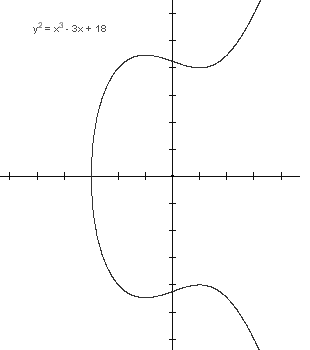
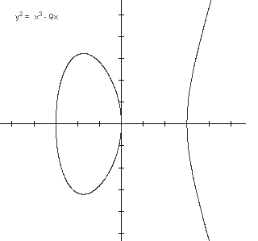
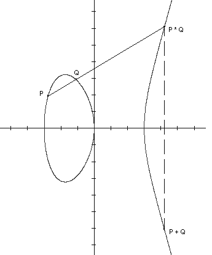
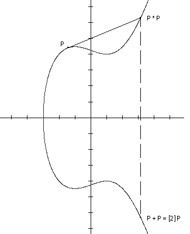

K) kubni polinom bez višestrukih korijena.
Eliptièka krivulja E nad
K je skup svih toèaka (x, y)
K × K koje zadovoljavaju jednadžbu
K) kubni polinom bez višestrukih korijena.
Eliptièka krivulja E nad
K je skup svih toèaka (x, y)
K × K koje zadovoljavaju jednadžbu
y2 = x3 + ax + b,
zajedno s još jednim elementom kojeg oznaèavamo s i zovemo
"toèka u beskonaènosti".
i zovemo
"toèka u beskonaènosti".
 1 = 0, gdje su 0 i 1
neutralni elementi za zbrajanje, odnosno množenje u K.
Ako je n 1
1 = 0, gdje su 0 i 1
neutralni elementi za zbrajanje, odnosno množenje u K.
Ako je n 1
 0
za svaki prirodan broj n, onda se kaže da je
K polje karakteristike 0. Pojam eliptièke krivulje se
može definirati nad proizvoljnim poljem K, meðutim najvažniji
sluèajevi su kad je K polje racionalnih brojeva
0
za svaki prirodan broj n, onda se kaže da je
K polje karakteristike 0. Pojam eliptièke krivulje se
može definirati nad proizvoljnim poljem K, meðutim najvažniji
sluèajevi su kad je K polje racionalnih brojeva
 ,
polje realnih brojeva
,
polje realnih brojeva
 ,
polje kompleksnih brojeva
,
polje kompleksnih brojeva
 ,
te konaèno polje
,
te konaèno polje 
 od q elemenata. Polja
,
i
su karakteristike 0,
dok je karakteristika od
jednaka p, gdje je p prost broj i q =
pm za neki prirodan broj m.
od q elemenata. Polja
,
i
su karakteristike 0,
dok je karakteristika od
jednaka p, gdje je p prost broj i q =
pm za neki prirodan broj m.
|
Definicija:
Neka je K polje
karakteristike razlièite od 2 i 3, te neka je f(x) = x3 +
ax + b (gdje su a, b
K) kubni polinom bez višestrukih korijena.
Eliptièka krivulja E nad
K je skup svih toèaka (x, y)
K × K koje zadovoljavaju jednadžbu
y2 = x3 + ax + b, zajedno s još jednim elementom kojeg oznaèavamo s i zovemo
"toèka u beskonaènosti".
|
Uvjet da polinom f(x) nema višestrukih
korijena ekvivalentan je uvjetu da je
4a3 + 27b2 0.
Broj D = - 4a3 - 27b2
se zove diskriminanta polinoma f(x).
Nije teško provjeriti da ako su x1,
x2 i x3 (kompleksne)
nultoèke od f, onda je D =
(x1 - x2)2
(x1 - x3)2
(x2 - x3)2.
Slièno se može definirati eliptièka krivulja i nad poljima karakteristike 2 ili 3. Ako je char K = 3, onda je pripadna jednadžba y2 = x3 + ax2 + bx + c, a ako je char K = 2, onda imamo dva tipa jednadžbi: y2 + cy = x3 + ax + b ili y2 + xy = x3 + ax2 + b.
Opæi oblik jednadžbe (koji je dobar nad svakim poljem) je:
y2 + a1xy + a3y = x3 + a2x2 + a4x + a6.
Ovu jednadžbu zovemo Weierstrassova forma od E i ona se supstitucijom varijabli (nadopunom na potpun kvadrat i potpun kub) može transformirati do jedne od gore navedenih jednadžbi, koju onda zovemo kratka Weierstrassova forma od E. U sluèaju ove opæe jednadžbe, umjesto uvjeta o razlièitim korijenima, imamo uvjet da su sve toèke na krivulji nesingularne (to znaèi da je u svakoj toèki barem jedna od parcijalnih derivacija 0,
tj. da u svakoj toèki postoji tangenta).
Jedno od najvažnijih svojstava eliptièkih krivulja jest da se na
njima može, na prirodan naèin, uvesti operacija uz koju one
postaju abelove grupe. Da bi to objasnili, uzmimo da je K =
polje realnih brojeva.
Tada eliptièku krivulju (bez toèke u beskonaènosti)
možemo prikazati kao podskup ravnine.
Polinom f(x) može imati 1 ili 3 realna korijena.
U ovisnosti o tome, graf pripadne eliptièke
krivulje ima jednu ili dvije komponente, kao što je
prikazano na sljedeæim slikama.
|  |  |
Definirat æemo operaciju zbrajanja na E.
Neka su P, Q
E.
Povucimo pravac kroz toèke P i Q. On sijeèe
krivulju E u tri toèke. Treæu toèku
oznaèimo s P * Q. Sada definiramo da je
P + Q osnosimetrièna toèka toèki P * Q
s obzirom na os x (vidi sliku).
Ako je P = Q,
onda umjesto sekante povlaèimo tangentu kroz
toèku P. Po definiciji stavljamo da je
P + =
+ P
= P za svaki P
E.
|  |  |
Pokazuje se da skup E uz ovako definiranu operaciju
zbrajanja postaje abelova grupa. Oèito je
neutralni
element, dok je -P osnosimetrièna toèka toèki P u
odnosu na os x. Komutativnost je takoðer oèita.
Najteže je provjeriti asocijativnost. To se
može napraviti korištenjem eksplicitnih formula za
zbrajanje, koje æemo sada navesti.
Ako je P = (x1, y1) i Q = (x2, y2), onda je
x(P + Q) = ((y2 -
y1) /
(x2 - x1))2
- x1 - x2,
y(P + Q) = -y1 +
(x1 - x(P + Q))
(y2 -
y1) / (x2 - x1),
x([2]P) =
((3x12 + a) /
(2y1))2
- 2x1,
y([2]P) = -y1 +
(x1 - x([2]P))
(3x12 + a) /
(2y1).
. Ona se pojavljuje
prirodno ukoliko eliptièku krivulju prikažemo u projektivnoj
ravnini. Projektivnu ravninu dobijemo tako što na
skupu  \ {(0,0,0)} uvedemo relaciju ekvivalencije
(kX, kY, kZ) ~ (X, Y, Z),
za k 0.
Ako u jednadžbi eliptièke krivulje (koju nazivamo još i afina jednadžba) uvedemo supstituciju
x = X / Z,
y = Y / Z, dobivamo projektivnu jednadžbu
eliptièke krivulje
\ {(0,0,0)} uvedemo relaciju ekvivalencije
(kX, kY, kZ) ~ (X, Y, Z),
za k 0.
Ako u jednadžbi eliptièke krivulje (koju nazivamo još i afina jednadžba) uvedemo supstituciju
x = X / Z,
y = Y / Z, dobivamo projektivnu jednadžbu
eliptièke krivulje
Y2Z = X3 + aXZ2 + bZ3.
Ako je Z 0,
onda klasa od (X, Y, Z) ima reprezentant
oblika (x, y, 1), pa ju možemo identificirati
sa (x, y). Meðutim, postoji i jedna klasa
ekvivalencije koja sadrži toèke za koje je Z = 0.
Ona ima reprezentant (0, 1, 0) i nju identificiramo s
toèkom .
Uoèimo da je u toèkama u kojima eliptièka krivulja sijeèe
os x, tangenta okomita na os x. Treæa toèka
presjeka tog pravca s E je
. To znaèi da
za te toèke vrijedi [2] P =
, pa kažemo da su
to toèke reda 2 ili 2-torzijske toèke.
Jasno je da gore navedene algebarske formule za zbrajanje toèaka,
koje smo dobili za sluèaj eliptièke krivulje nad
, imaju smisla
nad svakim poljem (uz malu modifikaciju za sluèaj polja s
karakteristikom 2 i 3). Pokazuje se da uz operaciju definiranu
ovim formulama eliptièka krivulja nad proizvoljnim poljem K
postaje abelova grupa.
(x1 - x2)2 (x1 - x3)2 (x2 - x3)2 = - 4a3 - 27b2.
y2 = x3 + ax2 + bx + c.
y2 = x3 - 43x + 166,
tj. najmanji prirodan broj n takav da je [n] P = P + ... + P =.
| Web stranica seminara | Andrej Dujella - osobna stranica |